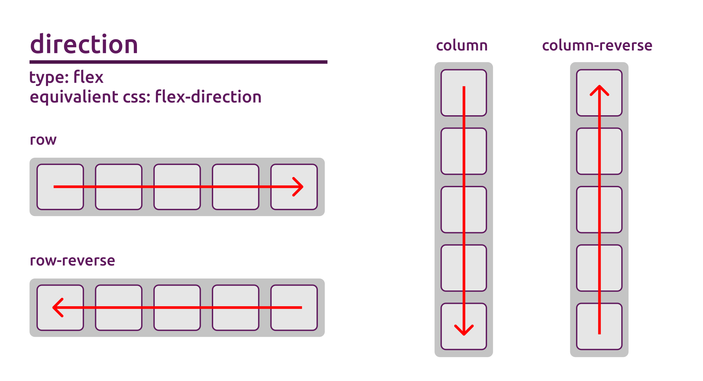
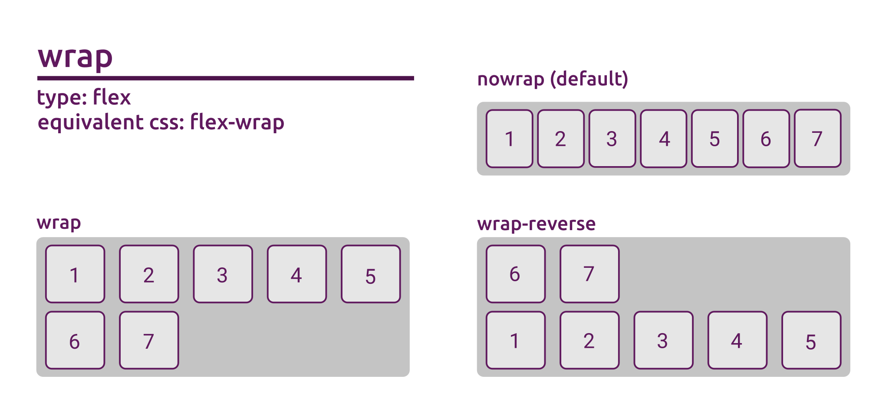
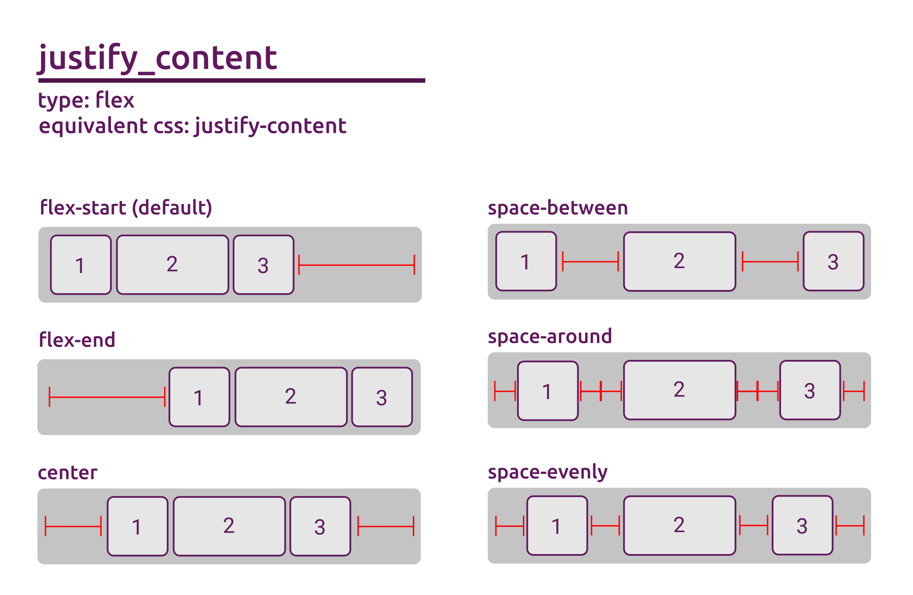
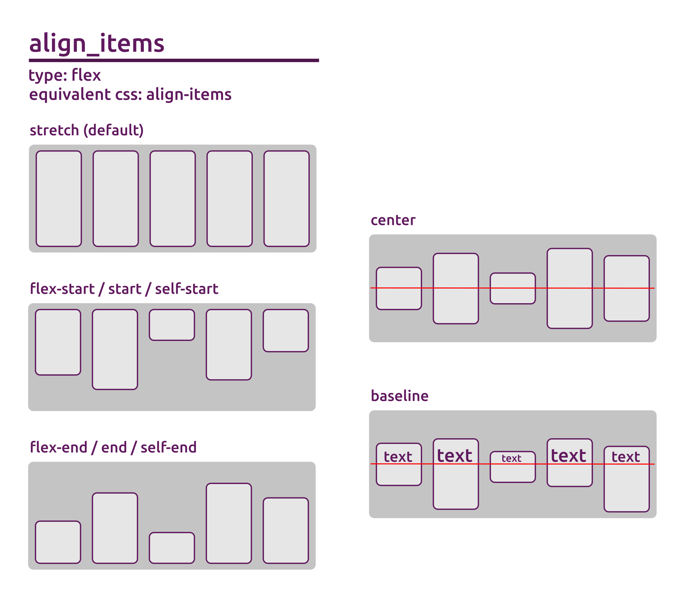
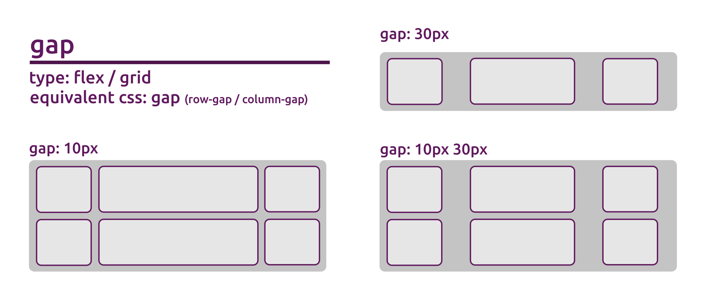
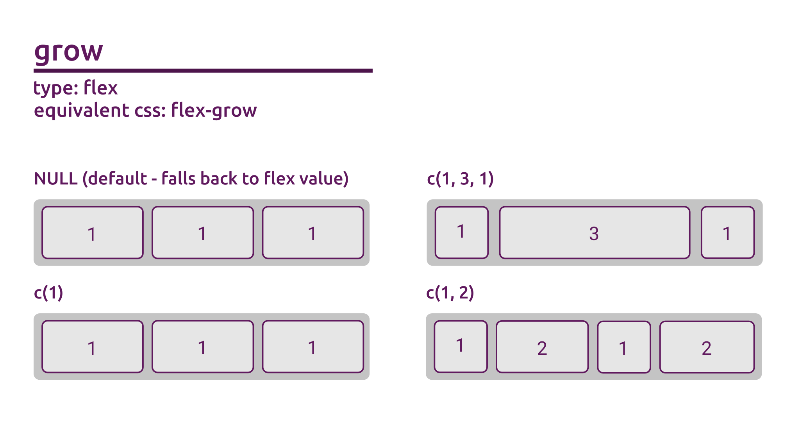

The flex family focuses on providing support for the CSS flexbox standard. In imola you can find 2 functions that allow you to create a new grid component. flexPanel() and flexPage().
Similar to what happens in the grid family, flexPage() is simply a wrapper for flexPanel() that allows you to create a page UI element without the need of using any of the built in shiny functions.
If you’re interested in more information about the full array of options in the CSS flexbox standard from the CSS side, I recommend this article to get you started.
Available arguments
The main function used to generate flex containers is flexPanel(). There’s a lot of arguments going on here, so lets go over what each option can do:
flexPanel(
...,
template = NULL,
direction = "row",
wrap = "nowrap",
justify_content = "flex-start",
align_items = "stretch",
align_content = "flex-start",
gap = 0,
flex = c(1),
grow = NULL,
shrink = NULL,
basis = NULL,
breakpoint_system = activeBreakpoints(),
id = generateID()
)…
Tag attributes (named arguments) and children (unnamed arguments). A named argument with an NA value is rendered as a boolean attribute.
Named arguments can be used to provide additional values to the container of the grid.
For a full list of valid HTML attributes check visit https://www.w3schools.com/tags/ref_attributes.asp.
Children may include any combination of: - Other tags objects - [HTML()] strings - [htmlDependency()]s - Single-element atomic vectors
... main purpose is to add content to your panel, but it can also be used to tweak your HTML generation, allowing a very similar behavior to traditional HTML tag functions provided by htmltools, and letting you customize your HTML tag. By default using these functions behaves similar to using div(), with additional styles being added to meet our layout expectations.
This means if we ignore the extra styling created by imola, the following call:
will generate the following HTML:
<div attribute="foo" bar>
<p>some content</p>
</div>template
The name of the template to use as a base for the grid, or the resulting value from using makeTemplate() to generate a template object.
When passing a string as a value if the template is not registered you will get a error message. Valid template strings are either built in or created using registerTemplate().
A quick way to see all registered templates (for flex functions) is to use names(listTemplates("flex")):
# names(listTemplates("flex"))
# Default built in flex templates
[1] "one-three-alternate" "one-two-alternate" "small-large-small" "three-one-alternate" "three-row" "three-two-alternate"
[7] "two-one-alternate" "two-row" "two-three-alternate"Templates that you register also become valid values for the template argument, and will also be displayed when listing available template names:
registerTemplate("flex", "mycustomtemplate",
direction = "column"
)
# names(listTemplates("flex"))
[1] "one-three-alternate" "one-two-alternate" "small-large-small" "three-one-alternate" "three-row" "three-two-alternate"
[7] "two-one-alternate" "two-row" "two-three-alternate" "mycustomtemplate"Any listed template name can then be used as a value, regardless if built in or custom:
flexPanel(template = "two-three-alternate")
two-three-alternate layout
For a full list of imola’s built in template layouts visit https://sparktuga.shinyapps.io/imolatemplates/
See listTemplates() and registerTemplate() documentation for more information on those functions, or vignette("imola-templates") for a full breakdown regarding templates in imola.
direction
Direction of the flow of elements in the panel.
Accepts a valid css flex-direction value (row | row-reverse | column | column-reverse).

By default the row value is used. Supports named list for breakpoints. See vignette("imola-breakpoints") for more on breakpoints.
wrap
Should elements be allowed to wrap into multiple lines.
Accepts a valid css flex-wrap value (nowrap | wrap | wrap-reverse).

By default the value wrap is used. Supports named list for breakpoints. See vignette("imola-breakpoints") for more on breakpoints.
justify_content
Defines the alignment along the main axis.
Accepts a valid css justify-content value (flex-start | flex-end | center | space-between | space-around | space-evenly | start | end | left | right).

By default the value flex-start is used. Supports named list for breakpoints. See vignette("imola-breakpoints") for more on breakpoints.
align_items
Defines the default behavior for how flex items are laid out along the cross axis on the current line.
Accepts a valid css align-items value (stretch | flex-start | flex-end | center | baseline | first baseline | last baseline | start | end | self-start | self-end).

By default the value stretch is used. Supports named list for breakpoints. See vignette("imola-breakpoints") for more on breakpoints.
align_content
Aligns a flex container’s lines within when there is extra space in the cross-axis.
Accepts a valid css align-content value (flex-start | flex-end | center | space-between | space-around | space-evenly | stretch | start | end | baseline | first baseline | last baseline).

By default the value flex-start is used. Supports named list for breakpoints. See vignette("imola-breakpoints") for more on breakpoints.
gap
Controls the space between items. It applies that spacing only between items not on the outer edges. The behavior could be thought of as a minimum gutter, as if the gutter is bigger somehow (because of something like justify-content: space-between;) then the gap will only take effect if that space would end up smaller.
The gap argument controls both the row gap and the column gap at the same time, making its css equivalent gap, row-gap and column-gap. If a single value is given it is used for both row and column gap, but a pair of values separated by a space can also be used for controling these independently.
Accepts a valid value in css values ("0", "10px", "20%", "0.5rem"), or a pair of values separated by space ("10px 20px", "5% 10%", "10px 5%").

By default the value 0 is used. Supports named list for breakpoints. See vignette("imola-breakpoints") for more on breakpoints.
flex
A vector of valid css ‘flex’ values for the child elements. Shorthand for grow, shrink and basis, with the second and third parameters being optional. This means that any compination of 1, 2 or 3 css values for grow, shrink and basis are valid.
Arguments that target child elements individually require a vector of values instead of a single value, with each entry of the vector affecting the nth child element. As an example c(1, 2, 1) will set the flex value of the first child to 1, the second to 2 and the thrid to 1.
If the given vector has less entries that the number of child elements, the values will be repeated until the pattern affects all elements in the panel. If the number of entries given is more that the number of child elements, exceeding entries will be ignored. NA can also be used as a entry to skip adding a rule to a specific nth element.
It is usually recomended to use flex instead of the individual parameters, this is because when omiting some of them, flex will actually set the other values intelligently.
An example of this is using a flex value of 1 is actually equivalent to 1 1 0% (grow = 1, shrink = 1, basis = 0%).
By default the value c(1) is used, meaning a value of 1 for every child. You might notice that this is diferent from the pure css default, but makes more sense in the context of shiny dashboards. To recover the default css behavior, use c("0 1 auto") as a value.
Check the following sections for grow, shrink and basis for more details. Supports named list for breakpoints. See vignette("imola-breakpoints") for more on breakpoints.
grow
Defines the ability for a flex item to grow if necessary. It accepts a unitless value that serves as a proportion. It dictates what amount of the available space inside the flex container the item should take up.
If all items have flex-grow set to 1, the remaining space in the container will be distributed equally to all children. If one of the children has a value of 2, that child would take up twice as much of the space either one of the others (or it will try, at least).

By default the value NULL is used, meaning it defaults to the value provided in the flex argument, which fallsback to 1 for each element.
shrink
This defines the ability for a flex item to shrink if necessary. It accepts a unitless value that serves as a proportion. It dictates what amount of the available space inside the flex container the item should take up.
If all items have flex-shrink set to 1, all elements will shrink at an equal rate. If one element has a larged shrink value, it will shrink at a faster rate that the other elements (depending on the diference between the given values).

By default the value NULL is used, meaning it defaults to the value provided in the flex argument, which fallsback to 1 for each element.
basis
Defines the default size of an element before the remaining space is distributed. It can be a length (e.g. 20%, 5rem, etc.) or a keyword.
The auto keyword means “look at my width or height property to use as a basis value for calculations”

By default the value NULL is used, meaning it defaults to the value provided in the flex argument, which fallsback to 0% for each element.
breakpoint_system
Optional Media breakpoints to use. Will default to the current active breakpoint system.
For arguments that support breakpoints, instead of simply passing them a value, you can also provide a named list of valid values.
The names used in that list can be any of the registered breakpoints available in the provided breakpoint_system argument (defaults to activeBreakpoints()), as well as the reserved keyord default.
See vignette("imola-breakpoints") for more details on breakpoints.
id
The panel ID. A randomly generated one is used by default. Providing your own ID will allow you to target the generated HTML tag via CSS or JavaScript if needed.
General rules regarding HTML Ids apply, including the fact that duplicated Ids are not allowed.